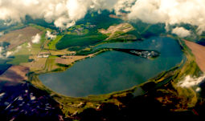
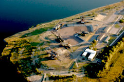
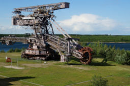
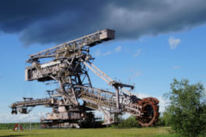
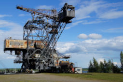
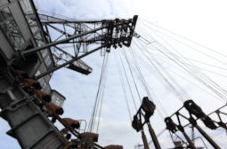
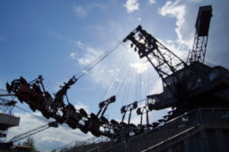

Ferropolis



Useful Information
| Location: |
Ferropolisstraße 1, 06773 Gräfenhainichen.
A9 exit 10 Dessau-Ost, B107 via Oranienbaum-Wörlitz towards Gräfenhainichen. Turn left, signposted. (51.758696, 12.446327) |
| Open: |
All year daily 10-17. Guided tours all year Sat, Sun, Hol 11, 13, 15. [2026] |
| Fee: |
Adults EUR 8, Children (6-16) EUR 5, Children (0-5) free, Students (-26) EUR 5, Disabled EUR 5, Families (2+4) EUR 20. Groups (+): Adults EUR 6. [2026] |
| Classification: |
 Lignite Mine Lignite Mine
|
| Light: |
 Electric Light Electric Light
|
| Dimension: | |
| Guided tours: | self guided. Guided tour: D=1 h, Max=25. |
| Photography: | |
| Accessibility: | |
| Bibliography: | |
| Address: | FERROPOLIS – Stadt aus Eisen, Ferropolisstraße 1, 06773 Gräfenhainichen, Tel: +49-34953-35125. |
| As far as we know this information was accurate when it was published (see years in brackets), but may have changed since then. Please check rates and details directly with the companies in question if you need more recent info. |
|
History
| 1957 | Start of operations at the Golpa-Nord opencast mine. |
| 1958 | Start of exploration work. |
| 1964 | Start of raw coal extraction. |
| 1991 | Golpa-Nord opencast mine decommissioned. |
| 1991 | Official start of mine rehabilitation. |
| 1995 | Ferropolis becomes an Expo 2000 project. |
| July 2000 | Ferropolis opens. |
| 2000 | begin of the flooding of the open-cast mine pit with groundwater and water from the Mulde river. |
| 2005 | Absetzer 1022 open to visitors. |
| 2007 | control room of the 30 kV substation, the bones of the forest elephant and the exhibition on surveying technology (Markscheiderei) opened. |
| 2009 | Ferropolis becomes an anchor point of the ERIH. |




Geology
In the Bitterfeld, Wittenberg and Torgau area lies a terminal moraine region known as the Gräfenhainichen-Schmiedeberg Plateau. Beneath the Pleistocene cover lay lignite-bearing strata and peat bogs that were deposited during interglacial periods and had only a very low degree of carbonisation. Lignite was extracted from these deposits in several mining areas via opencast mining.
Description
Ferropolis (city of iron) is by no means an iron mine; it is, quite literally, a city made of iron. This refers to the enormous iron behemoths that were used to extract lignite in vast opencast mines stretching for kilometres. In both the GDR and the Federal Republic, and later in reunified Germany, vast amounts of electricity were generated from lignite. Power stations were often situated directly next to the open cast mines, and the lignite was continuously shovelled onto conveyor belts by shovel excavators and transported directly to the power station. There wasn’t much stockpiling involved; the throughput of lignite was simply too great for that. Both the mining and the generation of electricity operated around the clock.
One of these huge opencast mines was situated north of Gräfenhainichen: the Golpa-Nord open cast mine, part of the Bitterfeld mining district. Until 1955, a mine railway line connected Bergwitz with the Zschornewitz power station; after the railway was dismantled, the embankment was used as an access road. The open cast mine was decommissioned as early as 1991, following German reunification. The thesis by the architect Martin Brück developed a concept for the use of the large-scale machinery remaining on the site as museum exhibits. On this basis, the project was carried out with the support of the Bauhaus Foundation, the Saxony-Anhalt Expo 2000 Society and the Lusatian and Central German Mining Administration Company. The museum opened to the public in July 2000. Since 2005, Ferropolis has been part of the European Route of Industrial Heritage. In the neighbouring Zschornewitz coal-fired power station, which also had to be closed when mining ceased, an industrial museum was established as a testament to coal-fired power generation.
 Search DuckDuckGo for "Ferropolis"
Search DuckDuckGo for "Ferropolis" Google Earth Placemark
Google Earth Placemark Ferropolis - Wikipedia (visited: 18-AUG-2023)
Ferropolis - Wikipedia (visited: 18-AUG-2023) Ferropolis, official website (visited: 18-AUG-2023)
Ferropolis, official website (visited: 18-AUG-2023)
 Index
Index Topics
Topics Hierarchical
Hierarchical Countries
Countries Maps
Maps